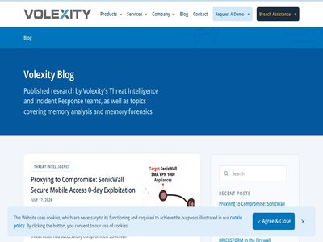

September 30, 2026 · 1 article

Infostealers highlight malware-as-a-service trend
September 30, 2026
Aurastealer, ACRStealer, and RemusStealer, a new potential LumaStealer variant, show MaaS in action. Here's what you need to know. (ReversingLabs Blog)
September 10, 2026 · 73 articles
Hawley probes OpenAI over Hugging Face breach
September 10, 2026
The Republican lawmaker called OpenAI’s leadership decisions “reckless,” and used recent warnings about the existential risk of AI to bolster his inquiry. The post Hawley probes... (CyberScoop)
AI lets small actors run state-level hacking campaigns, Anthropic report finds
September 10, 2026
The report details a Russian-aligned espionage campaign against more than 20 organizations, an exploit foundry run by Chinese undergraduates and ShinyHunters-affiliated breaches... (CyberScoop)

Surfshark VPN says hackers breached internal testing, proxy servers
September 10, 2026
Surfshark disclosed that hackers accessed one of its internal test servers after a configuration error exposed it to the internet. [...] (BleepingComputer)
Microsoft Excel KB5002914 update breaks copy and paste for some users
September 10, 2026
Microsoft Excel users report that this week's KB5002914 Office security update is breaking copy-and-paste operations and formula dragging, with affected users saying that removi... (BleepingComputer)

Artifactory Under Attack: In-the-Wild Exploitation of CVE-2026-42016, CVE-2026-42018 & CVE-2026-82329
September 10, 2026
Wiz Research has identified active, in-the-wild exploitation of three critical and high-severity vulnerabilities impacting JFrog Artifactory (CVE-2026-42016, CVE-2026-42018 & CV... (Wiz Blog)

U.S. CISA adds Cisco, Google Chromium V8, Fortinet, and Citrix NetScaler flaws to its Known Exploited Vulnerabilities catalog
September 10, 2026
U.S. Cybersecurity and Infrastructure Security Agency (CISA) adds Cisco, Google Chromium V8, Fortinet, and Citrix NetScaler flaws to its Known Exploited Vulnerabilities catalog.... (Security Affairs)

IDScan confirms breach after hackers offer 153 million driver’s license scans for sale
September 10, 2026
A notice dated September 4 but not widely shared shows that IDScan acknowledged a data breach but did not specify how many people were affected. (The Record)

CVE-2026-89049 - Server-side request forgery in the Session Manager port forwarding functionality in AWS Systems Manager Agent
September 10, 2026
Bulletin ID: 2026-107-AWS Scope: AWS Content Type: Important (requires attention) Publication Date: 09/10/2026 11:30 AM PDT Description: AWS Systems Manager Agent (SSM Agent) is... (AWS Security Bulletins)
Cyber Command turns to veteran of intelligence agencies for top AI role
September 10, 2026
Ronzelle Green, most recently a senior official at the National Geospatial-Intelligence Agency, will be U.S. Cyber Command's chief AI officer. (The Record)

We've got one word for it, and it's usually the wrong one
September 10, 2026
In this week's Threat Source newsletter, Joe explores why the word "burnout" often fails to capture the true toll of working in the cybersecurity industry and why we need better... (Cisco Talos)

ThreatsDay: 200 Android Flaws, Browser-Built Phishing, 119K Scam Shops + 23 More Stories
September 10, 2026
A lot of this week’s security news has the same awkward answer to one question: “Why was that allowed to work?” An extension asks for access and takes too much. A trusted servic... (The Hacker News)

Protecting organizations from AI-assisted executive impersonation and invoice fraud
September 10, 2026
Microsoft examines an AI-assisted business email compromise campaign that used executive impersonation and fake invoices to target finance teams with ACH payment fraud. The post... (Microsoft Security Blog)

Cybersecurity M&A Roundup: 33 Deals Announced in August 2026
September 10, 2026
Significant cybersecurity M&A deals announced by Brinqa, Cribl, Echo, Fortinet, Kiteworks, Palo Alto Networks, and Visa. The post Cybersecurity M&A Roundup: 33 Deals Announced i... (SecurityWeek)

Your passkeys can now move between password managers on Android
September 10, 2026
Google turned on a transfer feature in Android that moves passwords and passkeys straight from one password manager to another, with no file to download along the way. You start... (Help Net Security)
Detect and disrupt AI-themed attacks with Microsoft Defender
September 10, 2026
See how Microsoft Defender detects and disrupts AI-themed phishing, malware, and multi-stage attacks across the attack chain. The post Detect and disrupt AI-themed attacks with... (Microsoft Security Blog)
AI-powered attack exploited PaperCut flaws to hack 395 organizations
September 10, 2026
A threat actor, likely Russian-speaking, used hundreds of AI agents to develop and launch a global exploitation campaign targeting vulnerable PaperCut NG/MF servers. [...] (BleepingComputer)

BlueMoon exploit kit turns Chrome and Windows flaws into attacks
September 10, 2026
Four different espionage groups used the same exploit kit to target recently fixed flaws, showing why “patch later” is a dangerous gamble. (Malwarebytes Labs)

Nscale swallows lion's share of UK datacenter investment
September 10, 2026
Tracxn credits one AI infrastructure outfit with $3.7B of sector's $5.7B haul (The Register - On-Prem)
Cisco FMC bugs exploited by nation-state and ransomware actors (CVE-2026-20079, CVE-2026-20316)
September 10, 2026
State-sponsored and financially-motivated attackers are actively exploiting CVE-2026-20079, a critical authentication bypass vulnerability in Cisco Secure Firewall Management Ce... (Help Net Security)
New ‘ShieldCrash’ Zero-Day Exploit Targets Microsoft Defender
September 10, 2026
The exploit provides full System privileges on Windows machines running the September 2026 patches. The post New ‘ShieldCrash’ Zero-Day Exploit Targets Microsoft Defender appear... (SecurityWeek)
Anthropic Discloses Fourth AI Hacking Incident Involving Claude Opus 4.6
September 10, 2026
Anthropic on Wednesday disclosed a fourth incident in which its artificial intelligence (AI) model broke into real third-party systems, marking the latest in a growing list of c... (The Hacker News)
Multiple crypto companies warn customers of phishing emails after alleged provider breach
September 10, 2026
Subscribers to newsletters from Trezor, CoinTracking and BitBox received corrupted messages through an email provider that all three companies use. (The Record)

Is prevention essentially a solved problem?
September 10, 2026
Prevention in agent-generated code is architecturally solved-but choosing controls that protect security without slowing development remains the challenge. (Snyk Blog)
More Capable AI, Not Enough Guardrails
September 10, 2026
AI agents are gaining real-world access faster than safeguards can mature, making permissions, isolation and oversight critical to prevent harmful actions. Jacob Coxon, a resear... (Security Affairs)
Rubrik + RL: Bring Threat Intelligence and Detection to Backups
September 10, 2026
With this integration, Rubrik users can now tap ReversingLabs' ransomware feed to decide whether each file in their backup is safe. (ReversingLabs Blog)
Anthropic Researcher Resigns With Warning About the Dangers of AI Development
September 10, 2026
Both Anthropic and OpenAI have seen high-profile resignations in recent years that were tied to safety concerns. The post Anthropic Researcher Resigns With Warning About the Dan... (SecurityWeek)

SloppyRAT: A New Tool For Ransomware Attacks
September 10, 2026
IntroductionIn June 2026, Zscaler ThreatLabz identified a new malware family, tracked as SloppyRAT, that is likely leveraged by a ransomware-related threat actor. ThreatLabz obs... (Zscaler ThreatLabz)

PuzzleMask: Abusing Plain Prose as a Covert AI Attack Vector
September 10, 2026
Executive Summary In this research we introduce a prompt-crafting technique for bypassing quick LLM-based policy checks - using plain English (no emojis, base64, invisible forma... (Check Point Research)
Hacker Conversations: Vinnie Liu, Performer Turned Ringmaster
September 10, 2026
Vinnie Liu was recruited by the NSA when he was just 17 years old. He is now the CEO of Bishop Fox. The post Hacker Conversations: Vinnie Liu, Performer Turned Ringmaster appear... (SecurityWeek)
The Top 4 Threats We Found by Investigating Every Alert for a Quarter
September 10, 2026
Identity was the target in roughly half of all confirmed malicious activity. Prophet Security breaks down the four main attack patterns seen across customer environments between... (BleepingComputer)

CISA Updates Insider Threat Guide With New Mitigation Advice
September 10, 2026
CISA has updated its insider threat guide with new advice on remote work, AI and risk detection (Infosecurity Magazine)
Governments ‘buying time’ in race between innovation, security, national cyber director says
September 10, 2026
Sean Cairncross also said AI has shown long-standing issues in cyber rather than creating new ones. The post Governments ‘buying time’ in race between innovation, security, nati... (CyberScoop)
Deceptive Android Apps Exploit Google Play Early Access to Evade Reviews
September 10, 2026
Deceptive apps in Early Access are being used by dishonest developers for their own benefit. The post Deceptive Android Apps Exploit Google Play Early Access to Evade Reviews ap... (SecurityWeek)
Russian e-commerce giant Wildberries says DDoS attack delayed payments to sellers
September 10, 2026
Wildberries told several Russian media outlets earlier this week that payments to some sellers were delayed by security measures introduced after a distributed denial-of-service... (The Record)
Webinar Today: Keep Pace With AI - A New Operating Model for Endpoint Remediation
September 10, 2026
Join the webinar for a focused, 20-minute discussion on Frontier Pace Governance, an approach to balancing automation, policy, and business risk as IT operations accelerate. The... (SecurityWeek)
Attackers call employees’ personal phones to break into Microsoft 365 accounts
September 10, 2026
Attackers are calling or texting employees on their personal phones, posing as internal IT staff, in a social engineering campaign that tricks them into handing over access to c... (Help Net Security)

1.1.1.1 now supports post-quantum DNSSEC, all 2,420 bytes of it
September 10, 2026
1.1.1.1 now validates DNSSEC signatures using NIST’s post-quantum ML-DSA-44 algorithm. Here is how we manage 2,420-byte signatures and downgrade risks at scale. (Cloudflare Blog)
MantaxOtax Android Malware Combines Ransomware With Spyware
September 10, 2026
MantaxOtax Android malware combines ransomware with extensive spyware capabilities (Infosecurity Magazine)

The agentic harness for Tenable Hexa AI: How Tenable prevents AI agents from going off the rails
September 10, 2026
Learn why Tenable treats agentic LLMs as untrusted insiders, and how we’ve made sure you can control and monitor the AI agents making changes in your production security environ... (Tenable Blog)
UK appoints new commander of National Cyber Force
September 10, 2026
The individual has not yet been avowed - the formal process in Britain by which an intelligence or security figure’s identity is publicly acknowledged - as routine security cons... (The Record)
Critical NetScaler Vulnerability Exploited in Attacks
September 10, 2026
Tracked as CVE-2026-19490, the authentication bypass flaw has been exploited in the wild since at least September 3. The post Critical NetScaler Vulnerability Exploited in Attac... (SecurityWeek)
Will AI kill us all within the next decade?
September 10, 2026
AI researchers are warning that the technology could kill us all within the next decade, although they say the risk from current models is low. (Malwarebytes Labs)
FBI Publishes First-Ever Cyber Strategy, With Focus on Disrupting Threat Actors
September 10, 2026
The new document appears to be part of a broader shift by the US government towards the proactive disruption of cyber threat actors (Infosecurity Magazine)
Check Point Discloses Two 9.8-Rated VPN Certificate Flaws Enabling Unauthenticated RCE
September 10, 2026
Check Point has patched two critical vulnerabilities in the way its firewall and management products handle VPN certificates. The company says both could allow an unauthenticate... (The Hacker News)
Gigabud Creates Android Work Profiles to Hide From Banking App Malware Checks
September 10, 2026
The Gigabud banking trojan now installs a second Android app that creates a work profile on an infected phone and drops a tampered banking app inside it, security firm Group-IB... (The Hacker News)
4.1 Million Impacted by AdaptHealth Data Breach
September 10, 2026
In June 2026, hackers stole personal, health, and insurance information from AdaptHealth’s systems. The post 4.1 Million Impacted by AdaptHealth Data Breach appeared first on Se... (SecurityWeek)
Wiz achieves GovRAMP High Authorization
September 10, 2026
Delivering unified cloud security and accelerating secure modernization to protect citizen data and critical infrastructure. (Wiz Blog)
Update Chrome now to protect against an actively exploited vulnerability
September 10, 2026
Chrome issues another monster update, fixing an actively exploited V8 vulnerability and 229 other flaws. (Malwarebytes Labs)

AIs Compress Exploit Timeline
September 10, 2026
Give an AI agent a mere rumor of an exploit, and it’s enough for them to find it. What’s worse, I found I could use my own agents to find the exploit just by knowing roughly wha... (Schneier on Security)
Fortinet Code Execution Flaw Exploited in PivotC2 RAT Attacks
September 10, 2026
The high-severity, unauthenticated vulnerability tracked as CVE-2025-25249 was patched in January 2026. The post Fortinet Code Execution Flaw Exploited in PivotC2 RAT Attacks ap... (SecurityWeek)
Scytale expands vendor risk management with AI-powered TPRM tools
September 10, 2026
Scytale has announced the launch of their latest AI-powered third-party risk management (TPRM) capabilities within its Vendors module. The release further extends vendor risk ma... (Help Net Security)
WordPress adds automated security checks to block risky plugin releases
September 10, 2026
WordPress’ automated security review will now assess every plugin release before it is distributed through the WordPress.org update API. Releases considered a potential security... (Help Net Security)
Organizations Warned of Cisco Secure FMC Exploitation
September 10, 2026
Cisco and CISA have flagged exploitation of CVE-2026-20079, a vulnerability disclosed in March 2026. The post Organizations Warned of Cisco Secure FMC Exploitation appeared firs... (SecurityWeek)

The Machine With Many Faces: Post-Exploitation Identity Misuse in SPIFFE/SPIRE
September 10, 2026
Learn how root access on a compromised K8s node allows attackers to utilize SPIFFE/SPIRE metadata to spoof and harvest co-located workload identities. The post The Machine With... (Palo Alto Networks Unit 42)
Copyright scammers get Instagram accounts suspended and demand payment
September 10, 2026
Scammers are filing fraudulent copyright complaints to suspend Instagram accounts, then demanding payment to withdraw them. (Malwarebytes Labs)
Fake GTA 6 download delivers malware-packed bundle to impatient gamers
September 10, 2026
Grand Theft Auto VI (GTA 6) is still three months from release, but cybercriminals are not waiting for the launch date. Security firm Huntress found malware disguised as a leake... (Help Net Security)
A New Claude ‘s Sandbox Failure Shows How AI Can Rationalize Real-World Harm
September 10, 2026
Claude models compromised real systems during misconfigured security tests, exposing a worrying mix of flawed reasoning, harmful actions and weak safeguards. Anthropic just publ... (Security Affairs)

What Is ISPM? How It Differs from IAM, PAM, IGA, and IDaaS
September 10, 2026
Key Takeaways Identity Security Posture Management (ISPM) is the continuous risk and posture layer of the identity stack not a replacement for Identity and Access Management (IA... (Qualys Blog)
Anthropic Reveals Yet Another Cybersecurity Incident
September 10, 2026
Anthropic has found a fourth case of its model accessing third-party systems without authorization (Infosecurity Magazine)
Apple is building photo verification for the people who need it most
September 10, 2026
Apple has introduced Apple Reference Image, an opt-in feature designed to verify the authenticity of photos taken with iPhone 18 Pro models. Apple Reference Image provides users... (Help Net Security)
Microsoft fixes bug that wiped Windows desktop settings
September 10, 2026
Microsoft says the September 2026 Patch Tuesday updates fix a known issue causing desktop settings to be lost or reset on some Windows devices. [...] (BleepingComputer)
OFAC Sanctions Chinese Scam Platform Xinbi Guarantee
September 10, 2026
The US Treasury has placed sanctions on notorious Chinese cybercrime marketplace Xinbi Guarantee (Infosecurity Magazine)
Nearly 1 in 10 Exposed LiteLLM Gateways Accepted the Example "sk-1234" Admin Key
September 10, 2026
Nearly one in ten of the internet-facing LiteLLM servers that Wiz Research scanned in February accepted sk-1234, the example admin key in LiteLLM's own setup guide. LiteLLM is a... (The Hacker News)

EU Cyber Resilience Act to Enforce New Reporting Requirements
September 10, 2026
Starting Friday, businesses operating in the EU will have just 24 hours to notify the government any time they discover serious product security incidents. (Dark Reading)
Dental contractor set up secret account with access to 4,000 patient records then left the company
September 10, 2026
Toothless security (The Register - Security)
Product showcase: GitGuardian Honeytoken catches credential theft as it happens
September 10, 2026
Credential harvesting on developer machines has widened. Earlier infostealers worked from a short list of known targets, mostly browser stores and a few cloud credential paths.... (Help Net Security)
Cybercriminals are building phishing pages that exist only inside victims’ browsers
September 10, 2026
A phishing campaign routes victims through genuine Microsoft OAuth and Teams infrastructure before showing them a fake login page built entirely inside their own browser, accord... (Help Net Security)
AI adoption brings new security headaches for already stretched CISOs
September 10, 2026
CISOs are taking on AI governance without a matching increase in resources or expertise, adding to an already broad remit spanning data protection, identity, resilience and comp... (Help Net Security)
A new open standard locks AI weights to approved hardware
September 10, 2026
OPAQUE, a confidential computing company that runs AI workloads inside hardware-isolated environments so operators cannot inspect them, released an open standard that lets AI mo... (Help Net Security)
Kevin Mandia joins the Amazon board with 30-plus years in cybersecurity
September 10, 2026
Amazon elected Kevin Mandia to its Board of Directors on September 8. Mandia founded Mandiant and served as its CEO before Google acquired the firm in September 2022, and he has... (Help Net Security)

Srsly Risky Biz: America's Drivers Licence Breach is a National Security Disaster
September 10, 2026
Your weekly dose of Seriously Risky Business news is written by Tom Uren and edited by Amberleigh Jack. This week's edition is sponsored by Authentik . You can hear a podcast di... (Risky Business News)

Orkes Conductor Evaluator Remote Code Execution
September 10, 2026
What is the Vulnerability? Attackers are actively targeting Orkes Conductor servers vulnerable to CVE-2026-58138, a critical unauthenticated remote code execution vulnerability... (FortiGuard Labs)

The Intelligible World of Agents
September 10, 2026
AI agents don't fail from weak reasoning. They fail due to the disconnected and untrustworthy operational world in which they act. Find out why the world representation you give... (Recorded Future)
September 09, 2026 · 45 articles
Chinese espionage groups swarm to exploit triple-link chain of zero-days
September 09, 2026
Multiple China-aligned threat groups exploited the defects quickly to target various organizations. Proofpoint said the activity is ongoing and expects it to widen. The post Chi... (CyberScoop)
US Agencies Warn Chinese AI Firms Are Extracting Advanced AI Models
September 09, 2026
US agencies accuse six Chinese AI firms of extracting billions of tokens from US AI models to accelerate development and copy advanced capabilities. NSA, CISA, and the FBI joint... (Security Affairs)

Mind the (Patch) Gap: Multiple Chinese Threat Actors Chain 0-day Exploits in Chrome & Windows
September 09, 2026
On September 1, 2026, Volexity’s Network Security Monitoring (NSM) service detected a spear-phishing campaign from a Chinese threat actor it tracks as UTA0560 targeting customer... (Volexity)
Microsoft fixes record 964 flaws, including 2 exploited zero-days
September 09, 2026
Microsoft’s September 2026 Patch Tuesday fixes a record 964 vulnerabilities, including two actively exploited zero-days. (Malwarebytes Labs)
PoisonedRefresh: A Fileless Linux Rootkit That Injects PHP Web Shells Into F5 BIG-IP APM Server Memory
September 09, 2026
PoisonedRefresh rootkit injects PHP web shells into F5 BIG-IP APM Apache memory, leaving no disk artifacts. SophosLabs published a detailed technical analysis on September 8, 20... (Security Affairs)

Safe word: What is it and why do you need one?
September 09, 2026
AI scams are now hyper-realistic. But there’s one simple way to see through them. (ESET WeLiveSecurity)
Threat matrix: Mapping threats across cloud web applications
September 09, 2026
Microsoft introduces the Cloud Web Applications Threat Matrix, a MITRE ATT&CK-aligned framework that helps defenders understand, prioritize, and mitigate threats to cloud-hosted... (Microsoft Security Blog)
Identity-Based AI Attack Threatens Security of Enterprise Data
September 09, 2026
"Workflow identity hijacking" can bypass standard security controls and hijack an organization's data by sending a basic request through an unauthenticated entry point. (Dark Reading)
Introducing the CyberAgents Exchange AI Inspector: Rigorous review for community-built AI
September 09, 2026
Open-source registries for AI agents are only effective when they include a rigorous, transparent security review process for community submissions. That’s why for its new Cyber... (Tenable Blog)
Anthropic reveals fourth likely crime committed by its AI
September 09, 2026
Claude's Felony Bench rap sheet is now as long as OpenAI's (The Register - Security)

The state of AI for security: Measuring what matters most for building trust
September 09, 2026
Security teams are starting to actively use AI for security work, including vulnerability triage, penetration testing, threat modeling, incident response, and code review. The p... (AWS Security Blog)
AdaptHealth confirms 4.1 million people exposed in July cyberattack
September 09, 2026
Healthcare company AdaptHealth has confirmed that data of 4.1 million people was exposed in a cyberattack discovered in July that was attributed to the ShinyHunters threat group... (BleepingComputer)
CVE-2026-87911
September 09, 2026
Please refer to the article below for the most up-to-date and complete information related to this AWS Security Bulletin. (AWS Security Bulletins)
Mythos Vulnerability Firehose Hits a Human Bottleneck
September 09, 2026
An analysis of Project Glasswing findings shows only a fraction have reached disclosure, and an even smaller number have been fixed. (Dark Reading)
FTC rescinds policy requiring health apps to notify customers after a breach
September 09, 2026
The policy, passed under the Biden administration, forced health apps to disclose when users’ personal health records were exposed in a breach or shared without authorization. T... (CyberScoop)

Scans for Proxmox Servers, (Wed, Sep 9th)
September 09, 2026
About a week ago, Proxmox published an advisory revealing a vulnerability in older versions of Proxmox VE, its flagship Virtual Environment product. The vulnerability only affec... (SANS ISC)
HelmGuard Raises $7.3 Million for Agentic GRC and Security
September 09, 2026
The company will increase its US market presence and will expand its engineering and go-to-market teams. The post HelmGuard Raises $7.3 Million for Agentic GRC and Security appe... (SecurityWeek)
Electronic health record company says customer data stolen in breach
September 09, 2026
Veradigm said access was limited to a specific interface, and did not impact the company’s broader environment such as its networks, servers or databases. The incident did not r... (The Record)
AI Is Giving Lesser-Resourced Attackers Nation-State-Level Reach, Google Warns
September 09, 2026
Criminal and state-sponsored adversaries are increasingly using AI to automate and scale their attacks, according to GTIG. The post AI Is Giving Lesser-Resourced Attackers Natio... (SecurityWeek)
Off Guard: Breaking LiteLLM from authentication bypass to cloud compromise
September 09, 2026
How default keys, unauthenticated MCP sessions, and custom code guardrails expose cloud AI infrastructure to root-level remote code execution and IAM theft. (Wiz Blog)

Incident Automation: Benefits, Tools & Best Practices
September 09, 2026
Key Takeaways Incident automation is software running defined steps of an incident’s lifecycle without a person starting them. It spans the moment a finding becomes a declared i... (Orca Security Blog)

Credentialed Pre-Port Discovery: Don't Probe the Host, Ask it
September 09, 2026
If your scan engine already holds credentials for a host, it can ask that host which ports are open instead of probing for them. Every scan begins with the same question: which... (Rapid7 Blog)
WeChat worm could pwn a friend before they even answered the call
September 09, 2026
Calif says AI helped turn a VoIP memory bug into cross-platform RCE before Tencent shut it down (The Register - Security)
Risky Bulletin: Ukraine's top prosecutor resigns amid scam call center scandal
September 09, 2026
In other news: US accuses Chinese AI companies of industrial-scale distillation attacks; cyberattack hits Luxembourg doctors' clinics; Liquid Network attacker returns most funds... (Risky Business News)
FBI puts its cyber strategy on paper
September 09, 2026
The first public cybersecurity strategy issued by the FBI "directs our teams, our field offices, our global presence" to align their efforts on countering malicious hackers and... (The Record)
Veradigm warns of patient data breach after ransomware gang claims attack
September 09, 2026
Healthcare technology company Veradigm disclosed a data breach after a cybersecurity incident at one of its third-party vendors exposed patients' personal data. [...] (BleepingComputer)
FBI cyber chief worries private sector not sharing enough cyber threat information
September 09, 2026
Brett Leatherman said that industry has the wrong idea about what the FBI does with the data it collects during incidents, which is used to help victims and investigations alike... (CyberScoop)
Researchers Build WeChat Zero-Click Worm Hijacking Phones via Calls
September 09, 2026
The hacking tool, built using a combination of AI models, is effective against Android and iOS devices (Infosecurity Magazine)
The Models That Found 10,000 Zero-Days Broke Into Three Companies Using Weak Passwords
September 09, 2026
The question of whether a Frontier AI model could find vulnerabilities that no human researcher had found was settled in April. Claude Mythos Preview identified thousands of pre... (Qualys Blog)
Gigabud Uses Android App Cloning to Evade Fraud Detection
September 09, 2026
Gigabud clones banking apps into a work profile to break the link between malware alerts and fraud (Infosecurity Magazine)
MFA's Weakest Link: Account Recovery Is the New Attack Path
September 09, 2026
MFA makes account takeover harder, but attackers are increasingly targeting the recovery processes used to reset passwords and authentication methods. Specops explains why stron... (BleepingComputer)
How we rebuilt Cloudflare Workers’ module registry for Node.js compatibility
September 09, 2026
Workers now enables Node.js compatibility by default, supports applications up to 64 mebibytes, and adds a URL-based module registry with import.meta, lazy compilation, shared c... (Cloudflare Blog)
NHIs Now the Number One Corporate Entry Point for Hackers
September 09, 2026
SpyCloud claims non-human identities are the most likely route into the enterprise (Infosecurity Magazine)
FBI officials say AI is bolstering adversaries, emphasizing need to focus on cyber basics, patching
September 09, 2026
The remarks, to both CyberScoop and at the Billington CyberSecurity Summit, dovetail with the release of a new bureau cyber strategy. The post FBI officials say AI is bolstering... (CyberScoop)
Webinar: Learn How to Answer “Are We Exposed?” Faster After a New CVE
September 09, 2026
A major vulnerability is disclosed. The alert lands immediately. Then comes the harder question: Are we actually exposed? For many security teams, answering that means jumping b... (The Hacker News)
DeepSeek Harness Flaw Let AI Agents Disable Their Own File Sandbox Without Approval
September 09, 2026
A flaw in DeepSeek Harness, DeepSeek's open-source tool for running AI coding agents on a developer's machine, let a sandboxed agent turn off its own sandbox with a single comma... (The Hacker News)
Claude Fable Solves a Historical Cipher
September 09, 2026
Claude Fable 5.1 solved a 370-year-old cipher in forty-four minutes. This tracks with what I wrote about AIs doing mathematics: It’s good at things that involve lots of searchin... (Schneier on Security)

A “proof” of Fermat’s Last Theorem that fits the margin
September 09, 2026
Fermat famously claimed to have a “truly marvelous proof” of his Last Theorem , but he never wrote it down, insisting the margin of his page was too narrow to contain it. A few... (Trail of Bits Blog)
Over 36,000 exposed Plex servers vulnerable to recent flaws
September 09, 2026
Over 36,000 Plex Media servers exposed online remain unpatched against multiple security vulnerabilities and are vulnerable to attacks. [...] (BleepingComputer)
Untracked Nightmares: The Threats Hiding Behind Commodity Infrastructure
September 09, 2026
An investigation into how cybercriminals used YouTube gaming lures and SEO poisoning to deliver multi-payload malware to enterprise networks. The post Untracked Nightmares: The... (Palo Alto Networks Unit 42)
Man gets 15 years for extorting women with AI-generated porn videos
September 09, 2026
An Ohio man was sentenced to 15 years in prison for multiple cybercrimes, including sextortion and cyberstalking of numerous victims using AI-generated sexually explicit content... (BleepingComputer)
New cPanel Flaw Lets a Hosting Account With Mail Privileges Run Code as Root
September 09, 2026
cPanel has patched a flaw that it says lets a single hosting account take control of an entire server. An authenticated account holder with mail-related privileges can create fi... (The Hacker News)
SAP Patches Maximum Severity “Overpass” Flaw
September 09, 2026
Onapsis urges SAP customers to patch “Overpass” vulnerability, which has a CVSS score of 10.0 (Infosecurity Magazine)
Microsoft breaks Patch Tuesday record with 974-CVE deluge
September 09, 2026
Adobe also brought goodies to the patch party and they deserve immediate attention (The Register - Security)
Recorded Future Launches Digital Risk Protection, Unifying Brand and Identity Monitoring
September 09, 2026
Recorded Future just launched Digital Risk Protection, a unified solution covering five external threat surfaces, so security teams can detect, triage, and take down brand and i... (Recorded Future)
September 08, 2026 · 1 article
Attackers Use Multi-Hop Google Redirects for Phishing Campaign
September 08, 2026
Threat actors are abusing multiple Google services to evade detection, ultimately harvesting credentials or installing ScreenConnect remote access. (Dark Reading)